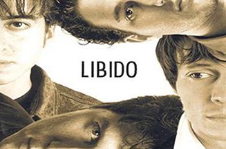

|  |
Año de formaciòn: 1996 Integrantes: Salim Vera, Antonio Jáuregui, Manolo Hidalgo, Wilder López, Iván Mindreau, Juan Pablo del Águila, Jeffry Fischman Estilo : Rock alternativo, Rock en español
|
|||||||||||
|
Libido (del latín libido: «deseo», «pulsión» y en un sentido estricto: «lascivia») es un término que se usa en medicina y psicoanálisis de manera general para denominar al deseo sexual de una persona. Como comportamiento sexual, la libido ocuparía la fase apetitiva en la cual un individuo trata de acceder a una pareja potencial mediante el desarrollo de ciertas pautas etológicas.1 No obstante, existen definiciones más técnicas del concepto, como las encontradas en las obras de Sigmund Freud y Carl Gustav Jung que hacen referencia a la fuerza o energía psíquica. Estos autores vinculan la energía libidinal, respectivamente, a las pulsiones y a su carácter eminentemente sexual como meta primaria (Freud) o a una energía mental indeterminada que mueve el desarrollo personal general de un individuo (Jung). Sigmund Freud, a su vez, habría tomado el término de A. Moll, quien lo utilizó en 1898 en la obra Untersuchungen über die Libido sexualis
.
|
||||||||||||
|
||||||||||||